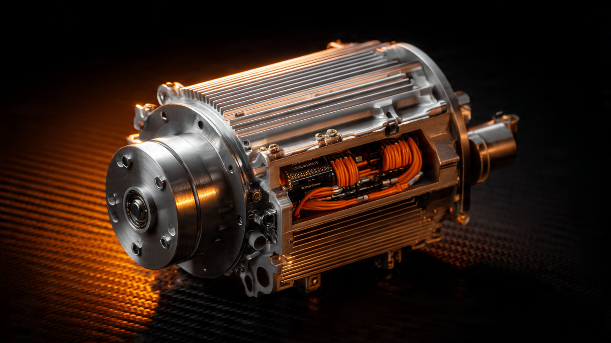

44 Pounds of Lightning: How McLaren Built an F1-Grade Electric Motor for a Road Car

Most hybrid hypercars are hybrids the way a buffet is a meal. Pile everything on: motors on both axles, batteries measured in the hundreds of cells, all-wheel-drive hardware, wiring harnesses that connect front and rear power electronics across four or five meters of high-voltage cabling. The result is capability, sure, but it is also mass, and mass is the enemy that every subsequent engineering decision must then fight. McLaren looked at what Ferrari and Lamborghini were building and chose differently, not incrementally but categorically.
The W1’s entire electrified powertrain lives in a single sealed module bolted to the side of its 8-speed dual-clutch transmission. Motor, power electronics, cooling interfaces, all of it. Twenty kilograms. That is less than a carry-on suitcase packed for a long weekend.
What 23 PS/kg Actually Means
Numbers without context are decoration. So consider what 23 PS per kilogram means relative to the landscape. A Tesla Model S Plaid motor produces roughly 375 kW from a unit weighing approximately 32 kg, yielding about 16 PS/kg. Porsche’s E-Hybrid motor in the 2026 911 Turbo S, integrated into the PDK housing, produces approximately 140 kW from a compact unit optimized for packaging rather than outright specific output. Ferrari’s F80 distributes its 255 kW of total electric power across three motors, each individually smaller but collectively heavier than McLaren’s single unit.
Formula 1 regulations cap the MGU-K at 120 kW. Its specific output, in the motors Mercedes-AMG HPP and Ferrari Gestione Sportiva build for the current power unit formula, sits in the range of 20 to 25 PS/kg depending on the team and configuration. McLaren is claiming their road car motor operates in that window, not near it but squarely inside it.
Bold claim, and one worth interrogating.
Radial Flux at 24,000 RPM
McLaren chose a radial flux architecture for the E-module motor, which is the conventional topology where the rotor spins inside a cylindrical stator, magnets arranged around the rotor’s outer circumference. Axial flux motors, which companies like YASA (now a Mercedes-AMG subsidiary) have championed for automotive use, offer higher torque density in a thinner package but introduce thermal management complexity at sustained high speeds and can suffer from cogging torque that makes them less linear in their response curve.
Radial flux was the conservative choice geometrically, but what makes it remarkable here is the rotational speed. At 24,000 RPM, the centripetal forces on the rotor magnets are enormous, demanding either bonded or encapsulated magnet retention rather than the surface-mounted configurations used in lower-speed automotive motors. Bearing selection, rotor balancing tolerances, and the electromagnetic switching frequency of the inverter all scale with RPM, and 24,000 is roughly triple what most production EV motors see at peak. It is firmly in aerospace and motorsport territory, a regime where conventional automotive design assumptions about bearing life, lubrication intervals, and rotor dynamics no longer apply.
High RPM trades torque for power at constant volume. Simple physics. The E-module produces 440 Nm, which for a 347 PS motor is modest. Compare that to the 1,000+ Nm figures some EV motors advertise at their rated speeds. But torque and power are mathematically linked through RPM: the W1 motor achieves its 255 kW by spinning fast rather than pushing hard, and fast spinning is how you shrink the motor without sacrificing output. Formula 1 MGU-Ks use the same strategy, because the motor never operates in isolation: behind it sits a 928 PS twin-turbo V8 providing the low-end grunt, and the electric motor fills the transient response gap, covering turbo lag and adding power at the top of the rev range where the combined system needs it most.
Silicon Carbide Does the Switching
Buried inside the E-module housing, sharing coolant channels with the motor itself, is a Silicon Carbide Motor Control Unit. Most people skip the inverter when discussing hybrid powertrains, which is a mistake.
An inverter converts the battery’s DC output to the AC waveform that drives the motor. In a 24,000 RPM motor, the switching frequency required to produce clean sinusoidal current is exceptionally high. Silicon IGBT transistors, the industry standard for a decade, begin to produce significant switching losses at these frequencies because their turn-off characteristics leave residual current flowing during each switching event, generating heat that compounds with every cycle. Silicon Carbide MOSFETs switch faster, produce less heat per transition, and tolerate higher junction temperatures before derating. At 24,000 RPM, the difference between SiC and silicon IGBTs is not incremental. It is the difference between a motor that can sustain its rated output on a track and one that thermally derates after three laps.
McLaren integrated the SiC MCU directly into the E-module housing rather than mounting it as a separate box connected by high-voltage cabling, which is how most OEMs handle power electronics. Integration eliminates cable length between the inverter and motor windings, reducing parasitic inductance that causes voltage spikes during switching events and degrades efficiency. It also removes the weight of connectors, cable shielding, and a second coolant circuit. That integration is a meaningful portion of how McLaren got the whole unit down to 20 kg. Five kilograms for the power electronics, fifteen for the motor. A separate-box approach would have added three to five kilograms in cabling and connectors alone.
1.384 kWh: A Battery Sized for Power, Not Range
Electric-only range: two kilometers. One point six miles. Parking garage distance. Barely enough to idle through a hotel valet queue and back.
That number looks like a shortcoming, a concession, maybe even a failure of ambition, until you understand what McLaren was optimizing for: not the commute, not the emissions test, not the EU regulation cycle, but the sustained power delivery envelope of a track car that happens to be road-registered. A larger battery stores more energy, yes, but it also weighs more, takes up more volume, demands more cooling capacity, and shifts the center of gravity. Lamborghini’s Temerario carries roughly 3.8 kWh and the mass penalty to match. Ferrari’s F80 lands at 2.28 kWh, a middle ground. McLaren chose 1.384 kWh and the freedom that comes with the smallest possible battery that can sustain the motor’s output under track conditions.
Motorsport-derived cylindrical cells, optimized for power density rather than energy density, populate the battery pack. Power density measures how quickly a cell can discharge relative to its mass. Energy density measures how much total energy a cell stores relative to its mass. A cell optimized for energy density charges your phone for a full day, stores its energy gradually over hours, and releases it in a measured trickle that keeps the chemistry cool and the cycle life long. A cell optimized for power density delivers 255 kW in bursts measured in seconds, survives thousands of cycles of violent discharge and regenerative charge, and maintains its output capability even as its state of charge drops toward the minimum threshold reserved for engine cranking and E-reverse.
That minimum threshold matters. McLaren eliminated the mechanical reverse gear from the W1’s 8-speed DCT entirely. Reversing happens through the electric motor running backward, a function McLaren calls E-reverse. It also serves as the engine starter. If the battery ever drains below a critical floor, the car cannot start and cannot reverse. McLaren’s battery management system maintains that floor as an inviolable reserve, which means the usable 1.384 kWh is actually less than 1.384 kWh in practice. Every joule allocated to the reserve is a joule unavailable for propulsion. Zero margin for error.
Immersion Cooling: Borrowing from Data Centers
Heat is the constraint that determines whether a hybrid system works for one lap or twenty. McLaren uses second-generation dielectric immersion cooling for the W1’s battery pack, a technology borrowed from high-density server cooling rather than automotive engineering. Battery cells sit submerged in a non-conductive fluid that absorbs heat directly from the cell surfaces without requiring the thermal interface materials, cold plates, or air gaps that conventional liquid cooling systems rely on.
Conventional battery cooling runs coolant through channels in a plate adjacent to the cells. Heat must conduct from the cell surface through a thermal interface pad, into the aluminum plate, and then into the coolant. Each interface introduces thermal resistance, another barrier between the cell and the coolant, another fraction of a degree that compounds across hundreds of cells and thousands of charge-discharge cycles until the cumulative thermal penalty forces the battery management system to reduce power output to protect cell chemistry. Immersion cooling eliminates all of those interfaces by putting the coolant in direct contact with the heat source, achieving thermal transfer coefficients that plate-based systems simply cannot match.
McLaren routes the heated dielectric fluid through a dedicated heat exchanger connected to the W1’s third cooling circuit, the hybrid circuit, which services the E-module, battery, onboard charger, and DC/DC converter independently from the engine’s high-temperature loop and the charge air intercooler’s low-temperature loop. Ten heat exchangers total. Three independent cooling circuits. For a car that also has to cool a 928 PS twin-turbo V8 with plasma-sprayed cylinder bores running 350-bar direct injection, the thermal engineering is as complex as anything in the current GT3 paddock.
928 PS of Context
Discussing the E-module without discussing what it is bolted to would be like analyzing a turbocharger without mentioning the engine. McLaren’s MHP-8 is a 4.0-liter twin-turbocharged flat-plane crank V8 producing 928 PS on its own, which makes it the most powerful internal combustion engine McLaren has ever built by a considerable margin and puts its specific output at 233 hp per liter, a figure that exceeds anything in current series production.
Flat-plane crankshafts fire each bank alternately, producing even exhaust pulse spacing that improves turbocharger spool behavior at the cost of increased secondary vibration, a trade-off that Ferrari has accepted for decades in its V8 road cars and that Chevrolet adopted for the C8 Z06’s naturally aspirated LT6, and that McLaren chose here for precisely the same thermodynamic reasons. But there is an engineering detail worth noting: plasma-sprayed cylinder bores replace conventional iron liners entirely, a technique borrowed from motorsport where bore diameter reduction, weight savings, and improved thermal conductivity across the cylinder wall justify the manufacturing complexity. Fewer thermal barriers between combustion and coolant means faster heat extraction, which means higher sustained output before thermal limits intervene, which means the engine can hold its rated 928 PS for longer durations under track conditions rather than derating within three or four laps the way a conventionally-cooled engine of equivalent specific output would.
Port fuel injection and 350-bar direct injection operate simultaneously, the dual injection strategy managing fuel atomization across the full RPM range rather than relying on direct injection alone at low speeds where its spray pattern can promote particulate formation. Twin-scroll turbochargers receive exhaust through equal-length tubular runners tuned for both energy recovery and acoustics. Redline sits at 9,200 RPM. Savage.
Rear-Wheel Drive Is a Statement
Sending 1,258 combined horsepower to the rear wheels only is not a neutral engineering decision, not a packaging constraint, not a cost-saving measure. It is a declaration.
Adding front motors provides traction advantages that are measurable and real. The Ferrari F80 has two front motors precisely because distributing torque across four contact patches improves acceleration from standstill and adds stability under hard cornering by vectoring torque to the outside front wheel. Lamborghini uses the same approach in the Temerario. Both are faster off the line than a rear-drive car of equivalent power because they are not traction-limited at launch.
McLaren chose rear-wheel drive for reasons they articulate clearly: steering feel. A front motor adds unsprung mass implications through its driveline connection, introduces torque steer management requirements even in sophisticated torque-vectoring systems, and fundamentally alters the kinematic relationship between steering input and road feel. McLaren also chose hydraulic power steering over electric assist, another decision that prioritizes communication through the steering wheel over the packaging and efficiency advantages that electric steering provides. Both choices sacrifice measurable performance metrics in service of a subjective quality that cannot be expressed on a spec sheet, which is either principled engineering or stubborn romanticism depending on how you feel about the relationship between a driver’s hands and the front contact patches.
Regardless of philosophy, the numbers force a reckoning. Four rear tires, Pirelli P Zero Trofeo RS in 265/35 front and 335/30 rear, must manage 1,258 horsepower and the combined torque of a V8 and an electric motor through a hydraulic E-differential that splits torque across the rear axle. The mechanical demands on the differential, half-shafts, and tire compound under full combined power in a second-gear corner exit are extraordinary, and the fact that McLaren trusts this setup enough to run it as the only drivetrain configuration available speaks to how much development went into the differential’s torque management algorithms.
What 40 Kilograms of Subtraction Bought
McLaren’s P1, from 2013, used an earlier hybrid system: a YASA axial flux motor producing 179 PS, a 4.7 kWh battery, and a combined electric system weight of approximately 60 kg. The W1’s electric system weighs roughly 40 kg less while producing nearly double the electric power. Dry weight for the W1 is 1,399 kg, essentially identical to the P1’s 1,395 kg despite producing approximately 400 more combined horsepower. Where did the weight go? Into the electric system’s diet, and into the carbon fiber monocoque and structures covered in our earlier piece on the W1’s ART carbon process.
Consider what those 40 kilograms mean dynamically. At the spring rates and damper frequencies a hypercar runs, 40 kg removed from the powertrain affects vertical load transfer under braking, lateral load transfer in corners, and the pitch and roll moments that determine how quickly the car transitions from braking to turn-in. Forty kilograms is also roughly the weight of a full fuel load in some GT3 race cars, which means McLaren effectively eliminated an entire fuel cell’s worth of mass from its hybrid system in 12 years, while nearly doubling output.
An Honest Assessment
Is this the right approach? Depends who you ask.
Front motors provide traction that rear-drive cannot replicate at launch. Ferrari’s F80 will almost certainly be faster to 100 km/h because it has four driven wheels and McLaren has two. All-wheel torque vectoring provides yaw stability in ways a rear differential alone cannot match, which is why every manufacturer competing in Formula E runs a rear-drive car on the track and then puts front motors in their road car halo products. McLaren is betting that what you feel through the steering wheel matters more than what the data logger records in a straight-line sprint, and that bet requires faith in a customer base sophisticated enough to value steering transparency over launch performance.
Two kilometers of electric range is functionally zero, a rounding error, a distance most people cover walking to their mailbox and back. In any jurisdiction with emissions-based congestion charging, the W1 offers no urban advantage. It cannot creep silently through a neighborhood. It cannot run on battery through a zero-emissions zone. McLaren sacrificed these capabilities deliberately, because every kilogram of battery added for range is a kilogram subtracted from track dynamics, and the W1 is a car built for the circuit first and the street second.
What cannot be argued is the engineering achievement of the E-module itself. Twenty kilograms producing 347 PS at 24,000 RPM with integrated SiC power electronics and a sealed, serviceable interface to the transmission is the most power-dense electric motor in any road car ever built, and it sits within the performance envelope of motors designed for a sport where every gram is contested by teams spending $200 million a year. McLaren built a road-legal piece of F1 hardware. Whether the car it lives in should have had front motors is a separate argument, and probably a better one to have at a track day than behind a keyboard.
Sources
- McLaren Automotive, “New McLaren W1: the real supercar,” official press release, October 6, 2024, technical specifications and E-module architecture.
- MotorTrend, “McLaren W1 First Look,” Andrew Beckford, October 2024, powertrain details and competitive context.
- The Autopian, “Why The McLaren W1 Is Every Engineer’s Dream Come True,” October 2024, hybrid system analysis and specific output comparison.
- Hagerty, “Meet McLaren’s Wild W1 Hypercar,” October 2024, E-module weight breakdown and cooling architecture.
- Top Gear, “Nine of the most outrageous numbers developed by the McLaren W1,” October 2024, battery capacity and E-reverse specification.
- Drive.com.au, “REVEALED: Most powerful McLaren ever has crazy F1 aero,” October 2024, MHP-8 engine details and flat-plane crankshaft specification.
- McLaren W1 full specification sheet, plasma-sprayed bore, 350-bar injection, and hydraulic steering confirmation via McLaren press materials.